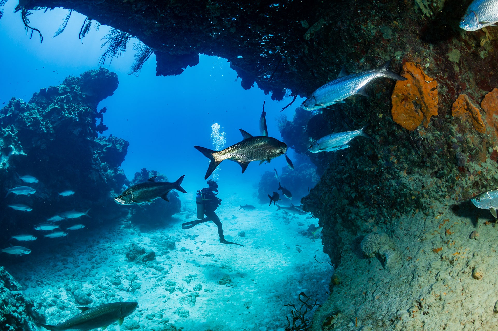
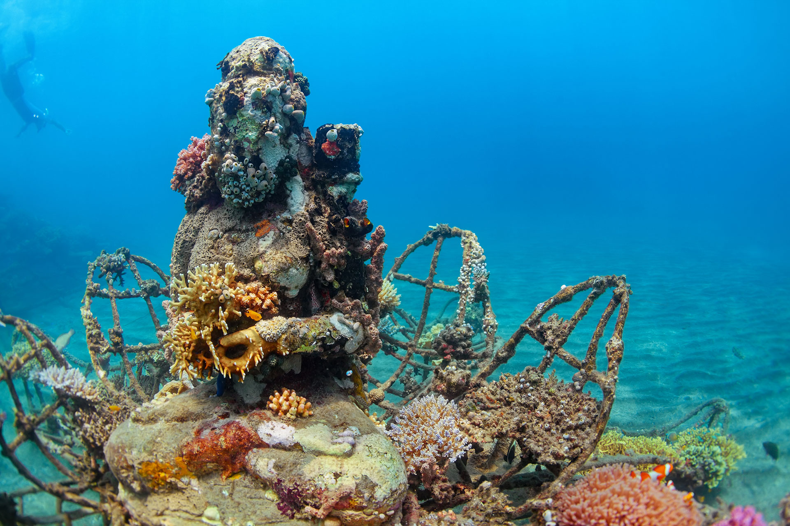

Dive into the world’s most breathtaking underwater locations. Whether it’s the crystal waters of the Cayman Islands, the vibrant reefs of Bali, or the vast marine biodiversity of Australia’s Great Barrier Reef, these top destinations are every scuba diver’s dream.